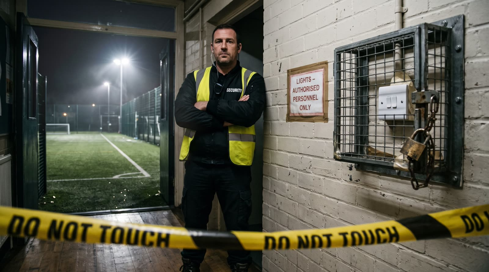

Nappy Gate: who left them in the goal?
A pack of adult nappies turned up in the net at full time. The club wants answers.
At the end of last Thursday's session, a pack of 20 adult nappies was found in the goal. The label says "Super". Absorbency: four drops out of five. Someone came prepared.
The club has opened a full investigation. Two questions remain: who bought them, and why were they at the pitch?
Luqman found the pack. As it stands, he is the prime suspect. The club has not received a comment from Luqman. The investigation continues.
Skinz: injured or running scared?Sick leave under review
Skinz started the season in fine form. Then came a few defeats and some shaky performances. Since then, Skinz has called in sick every Thursday. Is it a real knock, or a tactical absence? HR confirms his sick days ran out in October. The physio has one question: if the hamstring is that bad, why is he running so fast?
Bibs blame ref instead of looking in the mirror?The footage tells a different story
The bibs left last Thursday with one complaint: the referee.
The footage tells a different story. They treated the ball like a hot potato, and nobody wanted to keep it.
Listen here. One of the bibs players was heard complaining after the game:
Tap ▶ to play.
Read the transcript
“…and blame your football. Football, body. The problem is that I think the referee is for them. The referee is for them.”
Superstar Dualeh: bounce back or nappies on standby?Form watch
Dualeh is a 9/10 most weeks. Last week, he dropped a stinker. The club's analysts watched the footage twice to check it was really him. Will the superstar bounce back tonight? Or should the club keep the nappies on standby?
Westway: real calf injury or preloaded excuse?Fitness update
Westway is back from warm-weather training in the Middle East. Tan: elite. But rumours say Westway has mentioned a possible "calf injury". Is it genuine, or is he preloading an excuse?
Sudz returns. Security on the switch.Suspension served
Sudz is back from suspension. The club hired security to guard the light switch. Sudz: "No comment."
